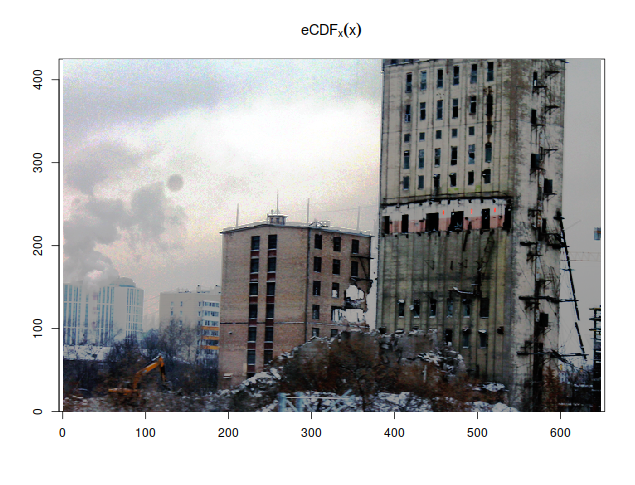

If you've ever done digital photo processing, you've probably used the Curves tool that provides an intuitive way to enhance contrast in some brightness ranges by scarificing it in other ranges. Basically, the steeper the curve is, the more contrast will increase. But resulting brightness range has to stay the same, so if you increase the slope anywhere, you then have to decrease it somewhere else (or cut off some brightness values, making them insidtinguishable).
Let's take a look at this nice picture and try applying different sigmoidal transforms to it:
We can highlight the details of the clouds by blacking out everything else, look at the houses by sacrificing darker and brighter parts of the picture, or just white everything out for no visible profit. The reason for different midpoints of our sigmoidal transformation function highlighting different amounts of details is that some intensities are more present on the image than others:

Which is why it's useful to white out everything after the peak corresponding to "white" color if you are working with badly produced scans (or, worse, photos) of paper documents:
Let's assume that we are working with single-channel/false-color images (so, no RGB or anything, just a single matrix of intensity values) and want to highlight the variance in brightness ranges which are occupied by most pixels (i.e. where are peaks of the histogram) at the expense of less populated signal levels (i.e. where histogram/density/frequency value is lower)1. The brightness transformation function should have the steepest jumps where there are the steepest jumps on the histogram, i.e. we just need to compute cumulative sum of the histogram to generate our transfromation function.
In fact, there's a simpler way to express that transformation, and it's empirical cumulative distribution function. Like  , its probability-theoretical counterpart, eCDF calculates the fraction of points in the dataset that are less than given value:
, its probability-theoretical counterpart, eCDF calculates the fraction of points in the dataset that are less than given value:
![]()
It can also be shown that the result of taking cumulative distribution function of a variate is uniformly distributed, i.e. has flat histogram, which is how this technique is remembered everywhere. So, just by plotting  instead of
instead of  , you already highlight the differences in mostly populated intensity ranges and enhance the contrast. If you do that to a photograph, the result would probably look weird (because you're now plotting quantiles instead of intensity values as perceived by the camera), but most scientific pictures already look weird even before you apply false colors, so that should not be an issue.
, you already highlight the differences in mostly populated intensity ranges and enhance the contrast. If you do that to a photograph, the result would probably look weird (because you're now plotting quantiles instead of intensity values as perceived by the camera), but most scientific pictures already look weird even before you apply false colors, so that should not be an issue.

But what if you had an R palette and wanted to feed your original data to a plotting function in R and make the histogram-flattening transform by applying a special kind of palette produced from the original you had?
R palettes are just vectors of colours (strings of hex codes, like "#00FF00" or "#FF4900FF" or colour names, like "palevioletred3" or "lightgoldenrodyellow"). If you plot a continuous numeric variable, R assumes that the palette uniformly covers the entire range of the colour-described variable2 and assigns the colour that would be the closest on that grid. There are built-in functions that generate nice-looking continuous palettes of specified sizes: heat.colors, topo.colors, terrain.colors, rainbow, grey.colors, cm.colors. Some packages also follow this pattern, like cubeHelix from rje package:
If you have a set of colors and want to have a continuous palette produced from them for you automatically, there is colorRampPalette function that takes a vector of colors and returns a palette-function (like ones described above):
We will also follow the palette-function pattern, which means that the function we are going to write will both accept and return a function. Functional programming FTW!
The problem with CDF is that it's right-continious and constant between discontiniuities. So, unlike  , which is always different for different
, which is always different for different  taken from original dataset, we probably will get non-unique values if we evaluate eCDF on a uniform grid:
taken from original dataset, we probably will get non-unique values if we evaluate eCDF on a uniform grid:
Same colours in a continuous palette (or, actually, any kind of palette) are a bad thing: they make different values non-distinguishable even if they got assigned to different colours in the palette. (In the end, we are still going to get non-distinguishable colors in value ranges far from histogram peaks - because we're interested in distinguishing densely-populated ranges - but we have to try, at least.) Moreover, the more points we request on that linear grid, the more repeats we'll get; and we are bound to get some non-uniques if the number of points in the grid exceeds the number of points in the dataset.
What to do? eCDF is just an estimate of the original CDF of the distrubition your points were sampled from. And your original distribution is hopefully continuous. So let's replace some of the repeats with interpolated values, so that all values are unique again:
We could probably try to get a smooth curve instead of linear interpolation, but splines are not guaranteed to be non-decreasing, so let's keep it simple. Now that we have a number of unique points in  range, let's call the original palette function and take colours at corresponding indices.
range, let's call the original palette function and take colours at corresponding indices.
But how many colours should we request from the original palette function? If we don't request enough, our calculated indices will be repeated and our new palette will produce same colours for different values. In a perfect world consisting of purely Platonic ideas of  eal numbers, there's one trick that would give us the exact number of colors we should request so that all indices recomputed from
eal numbers, there's one trick that would give us the exact number of colors we should request so that all indices recomputed from  to
to  would be different:
would be different:  . Except when
. Except when  is so small that requested amount of colors would start having troubles fitting into computer RAM, the difference would be impossible to perceive with human eye and impossible to express in 24-bit RGB in the first place. But even if we limit ourselveswith
is so small that requested amount of colors would start having troubles fitting into computer RAM, the difference would be impossible to perceive with human eye and impossible to express in 24-bit RGB in the first place. But even if we limit ourselveswith  , which is the total number of colours you can express in R using
, which is the total number of colours you can express in R using #RRGGBB notation (not counting transparency channel which is not used and would take 256 times more) it's still too much because none of the continuous palette functions manage to fit the entire (three-dimensional) RGB space into one linear range of values. In fact, palette functions stop producing unique colours after a few thousands, and most don't even reach that much:
> for(i in (256^1):(256^3)) if (length(unique(rainbow(i))) != i) {print(i); break} [1] 1531 > for(i in (256^1):(256^3)) if (length(unique(topo.colors(i))) != i) {print(i); break} [1] 543 > for(i in (256^1):(256^3)) if (length(unique(cubeHelix(i))) != i) {print(i); break} [1] 356 > f <- colorRampPalette(palette()) > for(i in (256^1):(256^3)) if (length(unique(f(i))) != i) {print(i); break} [1] 621
So let's limit our number of colours to a nice and modest value of 2048 but leave that as a parameter. Now that we know our N, calculating the indices is fairly simple:  , and there we have our histogram-flattening palette transformation function:
, and there we have our histogram-flattening palette transformation function:
histeq.palette <- function(x, pal, max.col=2048, ...) { function(n) { # palette is assumed to be linear; we're transforming its scale from linear to CDF-shaped grid <- seq(from=min(x), to=max(x), length.out=n) coords <- ecdf(x)(grid) # so, coords[zeroes+1] - coords[zeroes] == 0 zeroes <- which(diff(coords) == 0) # ECDF is right-continuous, so the last point is always bigger than second-to-last # but we can still have problems at the first point, which we shouldn't try to extrapolate zeroes[zeroes==1] <- 2 # if coords[2] == coords[1], interpolate second, not first # replace points where diff=0 with linear interpolation coords[zeroes] <- approx(grid[-zeroes], coords[-zeroes], grid[zeroes])$y # now that every coordinate is different, we know how many colors to request # so that every index would be different, too # but don't request too many colours because they won't be unique anyway n.pal <- ceiling(min(max.col, 1/min(diff(coords)))) pal(n.pal, ...)[round(1+coords*(n.pal-1))] } }
Let's feed a scientific image and a false-color palette to this palette-transforming function:
require(fields) # image.plot produces a colour bar with the plot image.plot(spectrum, col=topo.colors(512)) image.plot(spectrum, col=histeq.palette(spectrum, topo.colors)(512))
Most of the image was background, so our signal is whitened out. Instead, we see that some kind of wavy pattern covers all the image, invisible unless you highlight just the right part of the dynamic range. This is actually bad because it could interfere with shape of weak signals, but at least now we know that. (It's definitely impossible to see just from looking at original 16-bit image.)
Try histogram flattening on your own data to see if there's any patterns lurking in the middle of the bell curve!
1 This is the opposite of what you usually see on false-color images: the most different values are ones at the far end of the bell curve of the distribution.
2 But see zlim=c(min,max) argument of image(...) function.